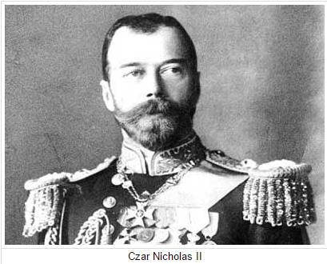
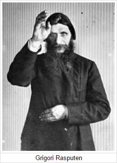

Motivation:
 Even though Tsar Nicholas was a nice person in general who had manners and cared for his family, he wasn't very good in politics and refused to reform because he saw his grandfather assassinated when he tried to make a change. He was also afraid that if he reformed, he would be in danger as well, so he made no changes for Russia and tried nothing to make Russia better24.
In addition, The Russian Empire was corrupt because the landowners didn't give their farmers any money when they worked for the landowners, causing famines and lack of crop. Poor people urbanized to big cities such as Moscow and Petrograd, making the cities over populated. Employed people had to work for a long time under dangerous environments with a low income, and the unemployed people barely survived with the lack of money.
Not only that, the war made food and manpower supplied for armies. Already lacking these, they lost more due to war. There weren't enough people to work in fields, creating famines and the lack of other resources. And even when there were supplies, they were too expensive for the normal people of Russia to buy.
 Yet the war kept going, and even worse, the Tsar declared himself the military leader and led the wars, but he had no talent or knowledge about wars and tactics, causing over 7 million deaths because of his military failures. This made the reputation of the Tsar even worse where he was already disliked by the people, and even other military leaders.25
It is also to be said that Rasputin controlled the Tsar and his wife. He got rid of ministers and replaced them with weak people to reinforce his own power. Already a weak government and an unstable society, Rasputin just made it worse.25